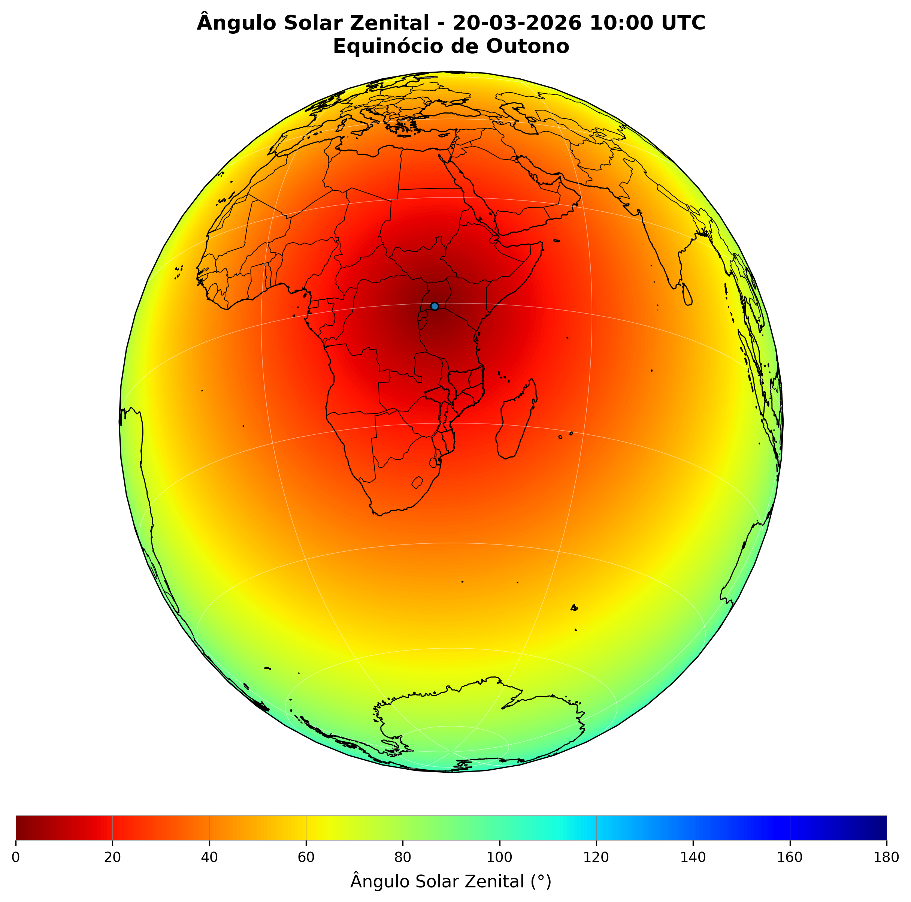

Distribuição global do ângulo solar zenital nos quatro principais eventos astronômicos de 2026.
O ângulo solar zenital é o ângulo entre a direção do Sol e a vertical local. Valores próximos de 0° indicam o Sol próximo do zênite, enquanto 90° corresponde aproximadamente ao horizonte. Valores superiores a 90° indicam que o Sol está abaixo do horizonte.
